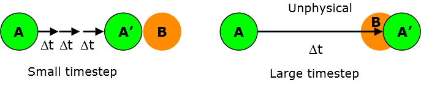

Constrained bonds¶
A typical molecular system often contains different modes of motions at very different timescales. Of all these motions, bond vibrations are some of the fastest, compare with, say, the rotational motion of the molecules.
Molecular dynamics calculations must therefore use a timestep that is small enough in order to adequately track the fastest mode of motion in the system. Otherwise, too large a timestep can lead to instabiliy and inaccuray of the motions.
{kind=link}
Bonds that are connected to lighter atoms tend to vibrate faster, especially those that contained the hydrogen atoms. For instance, consider a typical C-H vibrational bond, which has a typical frequency of 4000 cm-1 . This corresponds to a period of ~8 fs (femtosecond). It means the timestep used to update the atomic positions must be much less than the period of the bond vibration and this is usually in the range of 0.5 - 1.0 fs.
Note
You can see why it is not feasible to use MD simulations to look at long timescale phenomena. For example, to model atomic motions spanning across 1 ns by using 1 fs timestep would require 1,000,000 MD iterations.
However, timestep can be increased provided the MD does not need to track bond vibration. If you do not need very accurate thermodynamics values, removing bond vibrations does not contribute significantly to overall results. This is achieved by constraining bonds to a fixed equilibrium length by using SHAKE algorithm.
The SHAKE algorithm basically involves a two stage algorithm: (1) determine the position of atoms in the absence of bond constrain. (2) Determine the deviation in the length of a given rigid bond, to calculate retrospectively the constrain force (directed along the bond) needed to conserve the bond length. This process will be repeated if the largest deviation is found to exceed the desire tolerence with respect to the fixed bond length.
Note
There is a trade off in terms of computational time how precise you would want to keep the bond length fixed. The higher precision you require the more SHAKE iteration steps would be needed, which will take up more computational resources.
In DL_POLY, the tolerence limit is set to 10-6 and the maximum SHAKE iteration step is set to 250 by default. These values can be changed in DL_POLY CONTROL file. For example, reduce tolerence to 10-7 and maximum iteration cycle to 100:
mxshak 100
tolerence 10e-7
If bonds that contained the hydrogen atoms are constrained, then the timestep can be increased to 2 fs. For soft matters and biological molecules such as proteins, the tolerence limit can be reduced to around 10-4 .